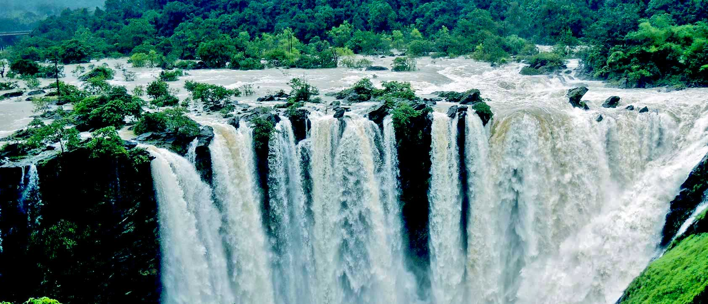
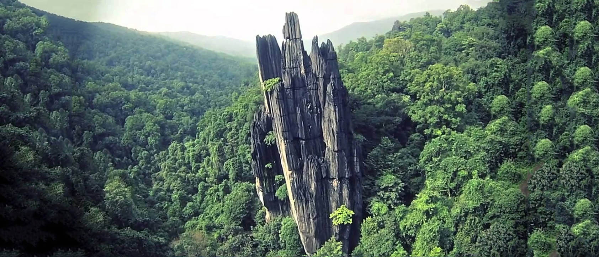
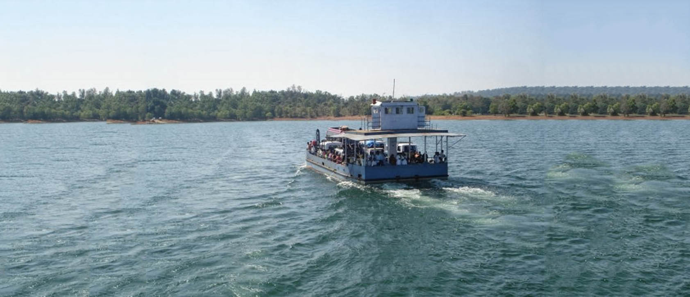

In this package we include historic places in and around Sagara Town along with Jog Falls which included beautiful musical fountain with Laser show.
Keladi:
Shivappa Nayaka and Chennamma were the rulers of this kingdom.After the disintegration of Vijayanagar Empire..
Read more.. Ikkeri:
It was, from about 1560 to 1640 AD, the capital of the Nayakas of Keladi chiefs, afterwards removed to Bednur Nagara. Ikkeri continued..
Read more.. Varadahalli:
It is notable for the hill shrine of Shri Sridhara Swami Ashram. It is famous for the Samadhi of His Holiness Sri Sridhara Swami one of the great saints of 20th century..
Read more.. Jog Falls:
Jog Falls, Gerosoppa Falls or Joga Falls is the second-highest plunge waterfall in India located in Sagara taluk in the state of Karnataka.
The segmented falls are a major tourist attraction. They are also known as the Gersoppa Falls or Jogada Gundi..
Read more..

Jog Falls
Adventure Trip.
In this package we include Adventure places where visitors enjoy adventure activities like small trekking.
Unchalli Falls:
Also known as Lushington Falls, is a waterfall created by a 116 metres (381 ft) drop in the Aghanashini river..
Read more.. Yana:
Yana is a place located in forests near Sirsi, which is known for the unusual rock formations..
Read more.. Sirsi:
Sirsi was known as Kalyanapattana during the Sonda Dynasty. It is the largest town and main commercial centre and business hub..
Read more..

Yana
Temples and Falls.
In this special trip we are covering spiritual and nature beauty of Malnad.
Sigandur:
It is surrounded on three sides by back waters of Linganamakki dam formed by Sharavathi River. The place is known for Sigandur Chowdeshwari Temple, which attracts hundreds of people every day..
Read more.. Jog Falls:
Jog Falls, Gerosoppa Falls or Joga Falls is the second-highest plunge waterfall in India located in Sagara taluk in the state of Karnataka.
The segmented falls are a major tourist attraction. They are also known as the Gersoppa Falls or Jogada Gundi..
Read more.. Ikkeri:
It was, from about 1560 to 1640 AD, the capital of the Nayakas of Keladi chiefs, afterwards removed to Bednur Nagara. Ikkeri continued..
Read more.. Varadahalli:
It is notable for the hill shrine of Shri Sridhara Swami Ashram. It is famous for the Samadhi of His Holiness Sri Sridhara Swami one of the great saints of 20th century..
Read more..

Sigandur
Coastal special.
This trip covers beautiful places around coastal region of famous Murudeshwar Temple and many more.
Murudeshwar:
Murudeshwara, is another name of the Hindu god Shiva. Famous for the world's second-tallest Shiva statue, lies on the coast of the Arabian Sea and is also famous for the Murdeshwar Temple..
Read more.. Gokarna:
Gokarna means Cow's Ear. It is believed that Lord Shiva emerged from the ear of a cow (Prithvi, the Mother Earth) here. It is at the ear-shaped confluence of two rivers Gangavali and Aghanashini..
Read more..
Gokarna
Crafts
Sagara have been engaged in sandalwood and ivory carving. Men make idols, figurines and knickknacks like penholders, agarbathi stands, cuff links, photo frames
and paper clips;the women are adept at making garlands and wreaths out of thin layers of scraped sandalwood.
Sagar
Sagar is a city located in the Indian state of Karnataka and it is also a sub divisional and a taluk headquarters.
Located in theWestern Ghats range, it is known for its proximity to Jog Falls and to the historical places of Ikkeri,
Keladi and Varadamoola. The river Varada originates near Sagara.